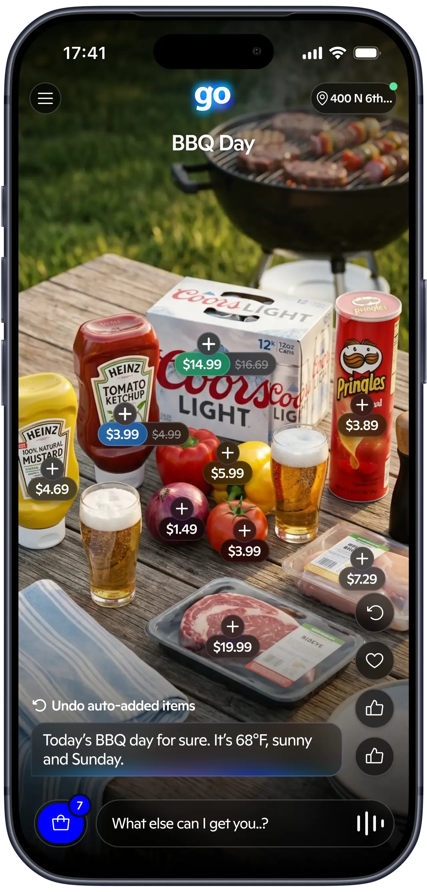
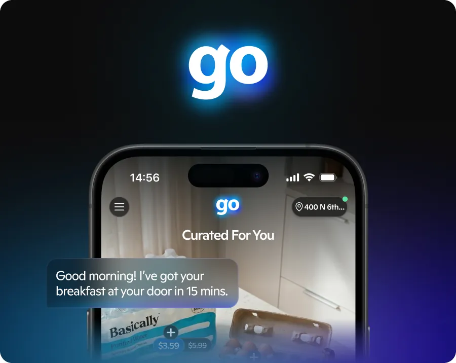
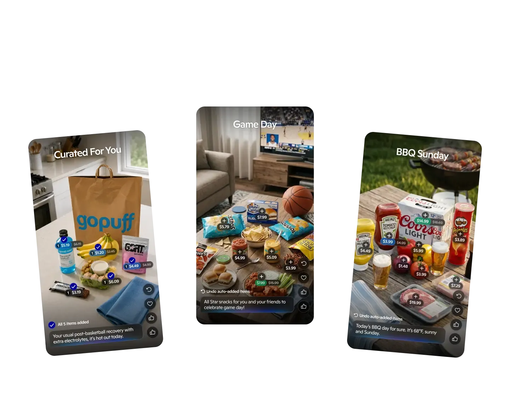
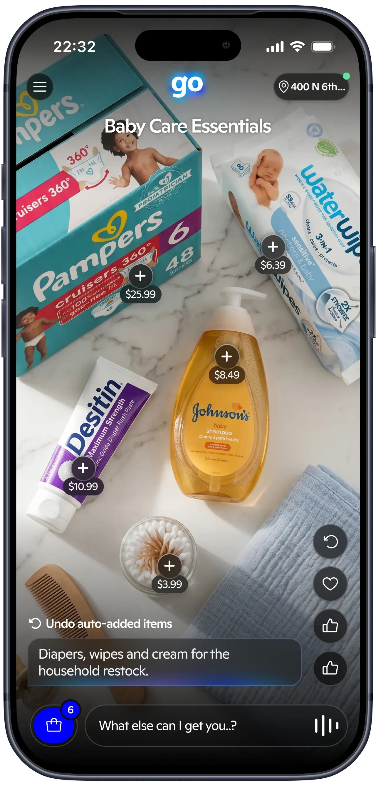
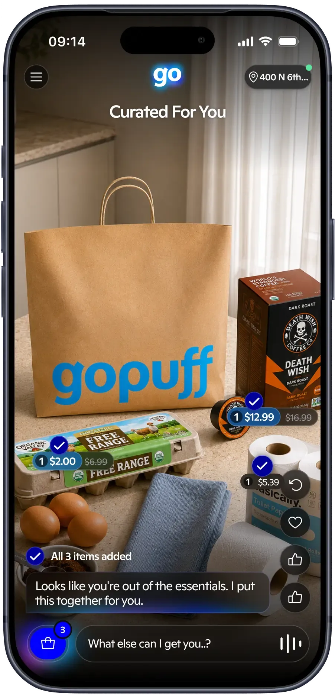
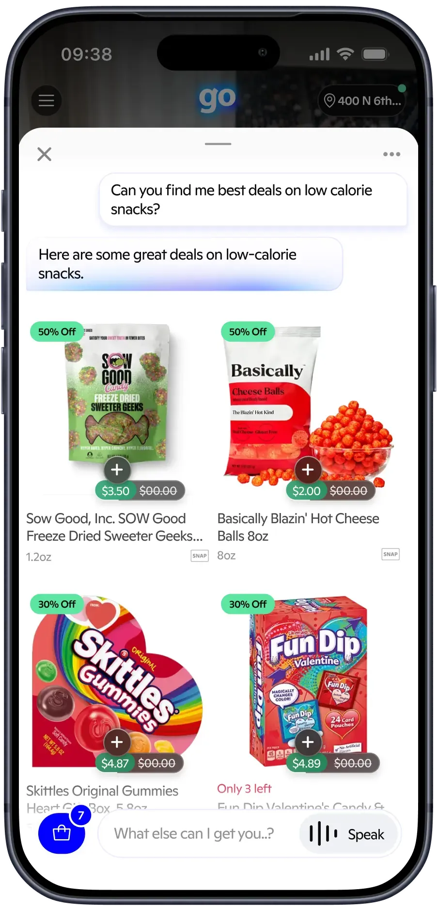

Overview
Gopuff and SpaceX AI set out to build something that didn't exist yet: a grocery platform that shops for you. Go predicts what you're running low on, builds baskets for you around real moments in your life, and delivers in under 15 minutes.
I led the design across the full Go experience. Together with the Eight inc team, I was responsible for the interaction design, the Moments system, the AI's visual language, and the brand expression that would carry it. My job was translating an enormously ambitious AI capability into something people would actually trust with their groceries.
We shipped it. Then the data told us which parts were working and which weren't, and that's where the real design challenge started.

The Constraint
The early direction was minimal and it was fractured.
The initial brief was to add an intelligent chatbot AI model that could help users with their shopping. I didn't want to build just another chatbot experience; instead I took the opportunity to design something that felt revolutionary, industry changing and never seen before. A product that shops for you. It predicts what you want thanks to the access Gopuff has to a scale of data no one else does.
The first design approach was clean. White screens, simple typography, a pared-back interface that tried to get out of the way. The logic made sense on paper: reduce friction, reduce noise, let the AI do the work. But something wasn't landing. The more we stripped back, the more the product felt like any other grocery app.
We had a three-tab system: Ask, Explore, and Go Bag. Each did something distinct and each did it reasonably well in isolation. Together they broke the product. Users didn't know where to start. They didn't know where to go next. They'd land in Ask, not know what to say, tab over to Explore, lose the thread, and never reach the bag we'd built for them.
What didn't work
We tried to solve it with onboarding. It didn't work, and that's usually the tell. When onboarding is doing the work your information architecture should be doing, the architecture is wrong.
The minimal visual direction added more weight to it and made it worse. Stripping the interface back removed the very signals users needed to orient themselves. Discovery flattened. The AI's intelligence had nowhere to live. There was no way to look at a screen and sense that anything remarkable was happening underneath it.
The constraint wasn't technical. It was structural and creative. And I'd been trying to fix it with refinements when the whole shape was wrong.
Miami
I flew to Miami and ran a two-day whiteboard and rapid prototyping workshop with the CEOs and the full Gopuff and SpaceX AI teams. I led the sessions, and I set myself a hard condition going in: I wasn't flying back to London without a direction the entire room was genuinely proud of.
The visual direction went the opposite way from minimal: hyper-real, immersive product photography set in actual environments. Groceries laid out on your kitchen table. The BBQ you'll be having in 15 minutes. Not a product-led experience, but a moment-driven one showing you what you're about to live once the delivery arrives.
We collapsed everything into a single page. The input field is the entry point to the conversation with Go. No tab, no navigation, just type or speak. The first thing users see is the auto-added predicted Moment: a bag Go has already built for you, ready to go.
Swiping up moves you to the next Moment, and the next, TikTok-style, a vertical feed of AI-generated baskets to discover, explore, and get inspired by.
Weeks of prior work, gone. I wasn't precious about it. The cost of shipping the wrong structure was far higher than the cost of restarting.

What I Designed
A single-surface interaction model
Chat, prediction, and discovery collapsed into one page with a vertical Moment feed. The three-tab system's core failure was making users navigate to find value. The new model delivers value first and makes navigation optional.
A visible AI signature
The Go wordmark became a glowing light source, appearing wherever the AI is thinking or speaking. Users learn fast: when it's glowing, Go is working. A trust cue built into the identity rather than explained in copy.
Shop by Moments. Baskets built around real life
BBQ Day, Game Day, a 5am gym session, Puppy Treat Day. Each with a specific reason attached; "Your usual post-basketball recovery, with extra electrolytes. It's hot out today." Being specific is what makes an AI recommendation feel trustworthy rather than arbitrary.
Control without friction
Every item editable (quantity, swap, remove) alongside "Add all" for users who want to accept a Moment in one tap. The goal was partial acceptance: keep what's right, change what isn't, never feel forced into all-or-nothing.

Testing Before Scale
We shipped an MVP to 4,000 users and tested not just the prediction engine, but everything around it. Did the UX hold up without a facilitator in the room? Was the tone of voice landing? Did the copy read as helpful or presumptuous? Was the brand implementation coherent across every surface a user could hit?
After a few quick corrections and iterations, promising early metrics gave us the confidence to go wide. We launched publicly to 50+ million users across the US.



The Results
- usage Rate
- 15%
- Average Order Value
- +28%
- Daily Revenue
- $52K
- Moments Revenue
- +73%
Metrics
Adoption at real scale
Go reached a 15% usage rate across tens of thousands of daily visits, roughly one in seven eligible users choosing it organically, inside an established app where people already had a shopping habit.
Go users spent 28% more per order
That's the number I'm proudest of.
It reframes Go from a convenience feature into a commercial driver: people who used it didn't just shop differently, they shopped bigger.
$52.3K in daily revenue
Growing 8.2% week on week, with Go's share of total Gopuff product revenue up 12.5% WoW. Around 2,720 Go orders per day, with nearly one in three ordering visits producing a Go-attributed order.
What the Data Changed
Public launch was the start of the design process, not the end. I worked directly from the Go performance dashboards, and the week-on-week movement is where the real story is.
Explore revenue grew 73.2% week on week. Explore became the fastest-growing part of Go. That's the clearest evidence I have that scrapping the three-tab model was right, and it's what I'd point to if anyone asked whether the lost weeks were worth it.
Conversion rose 21.1% WoW to 14.6%.
More users completing purchases each week as the experience got clearer.
Full bag removal fell 8.8% WoW to 46%.
Early on, a large share of users were deleting Go's entire suggested basket. A blunt signal they didn't trust it yet. The problem wasn't the concept, it was the details: wrong quantities, wrong brands, too many items. Making those easy to swap moved users from rejecting everything to keeping part of it, which was exactly the shift I'd designed for.
Revenue per bag rose 15.5% WoW to $3.90. Every basket a user saw was worth more than the week before, not because we showed more, but because the ones we showed were better matched and easily editable.
The insight that changed the product again
Reading the behaviour data, one pattern jumped out: a large share of users were using chat as a search bar. Typing "milk." Typing "ramen." Searching instead of taking advantage of the SpaceX AI model capabilities to recommend the right set of products.
At first this was treated as a failure of the “Ask Me Anything” education, and partly it was. But the more honest read was that it was a very common behaviour we hadn't designed for. Sometimes shoppers want inspiration. Sometimes they know exactly what they need and want it in their bag in ten seconds. We'd built beautifully for the first case and left the second one behind a chat window.
So I improved the education around how to talk to Go, making the conversational capability discoverable rather than assumed. I also made it far easier to browse and explore categories inside and outside the chat experience, with the same imagery and recommendation logic running through it, so it never felt like a bolted-on fallback.
I designed toward creating the user's personal “Aisle”: somewhere they come back to and know exactly where everything is, like their local supermarket, for the times they don't want inspiration and just want utility.
Average items added to cart went from 7 to 11.
That's a 57% increase, and it came from reading behaviour honestly rather than defending the original design intent.
Elon Musk on launch
June 2026, 11.4M views
What I Took From It
- Onboarding can't fix architecture – If users need to be taught where to go, the structure is wrong. Collapsing three tabs into one surface did more for comprehension than any amount of tutorial ever did.
- Knowing when to restart – Refinement has a ceiling. Recognising you've hit it is harder and more valuable than iterating toward the wrong answer. Locking a room for two days until we found a direction everyone believed in was the highest-leverage thing I did on this project.
- Design for the behaviour you observe, not the one you intended – Users treating chat as search wasn't them using it wrong. It was a mode we hadn't served. Serving it took average cart size from 7 items to 11.
- Read the trend, not the snapshot – A 46% full-bag removal rate looks alarming in isolation. Down 8.8% WoW and still falling, it's a product earning trust in real time.
The product that shipped didn't exist when I started.
What I'm most proud of isn't a screen. It's the decision to collapse a structure that wasn't working, the two days in Miami spent holding a room until we had something worth building, and then the discipline to keep designing against real behaviour once 50 million people had access to it.
Go proved that people will let AI shop for them, but only if the interface earns their trust. And earning it is a design challenge, not an LLM one.